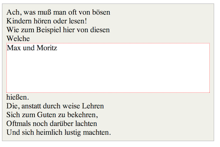

The Display Property
June 21, 2015
What does it mean to display inline vs inline blocks?
To understand inline vs inline-blocks, I must first explain what the CSS display property is. The w3 school explains the display property as below:
The display property specifies if/how an element is displayed.
In other words, how the content appears to the viewer. The display property can have a variety of values: none, block, inline, or inline-blocks. None is self-explanatory meaning the tag contents will not show up at all. The other 3 I summarized in a list below.
-
Inline
- respect left and right margins and padding, but NOT top and bottom
- CANNOT have a width and height set
- allow other elements to sit to their left and right.
-
Block
- respect left, right, top, and bottom margins and padding
- respect height and width
- does NOT allow other elements to sit to their left and right and forces a line break after the block element 
-
Inline-blocks
- respect left, right, top, and bottom margins and padding
- respect height and width
- allow other elements to sit to their left and right